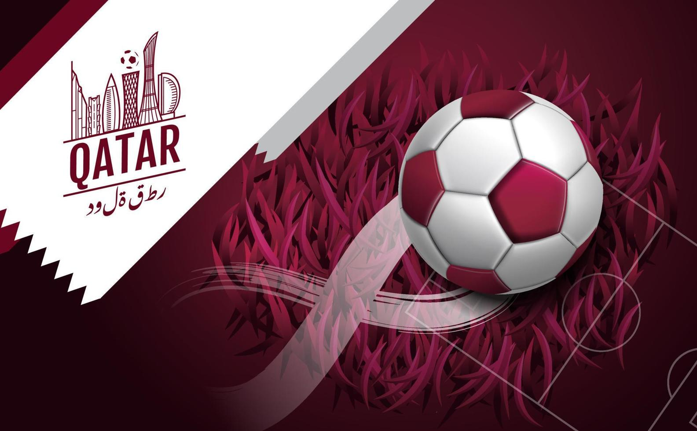

Sobre a Copa do Mundo no Catar
A 22ª edição do campeonato mundial de futebol será muito especial. Pela primeira vez na história do futebol, o Catar sediará uma Copa do Mundo e, pela primeira vez, devido às altas temperaturas, as partidas não serão disputadas no verão, mas no inverno! De 20 de novembro a 18 de dezembro, as melhores equipes do mundo lutarão pelo título da Copa do Mundo no período de Natal.
Referência: https://www.futeboleiro.com/copa-do-mundo-2022/ Informações importantes
| Sede | Catar |
|---|---|
| Périodo | 20/11 à 18/12 de 2022 |
| Número de equipes | 32 seleções |
Curiosidades
| Primeiro campeão | Urugaui |
|---|---|
| Último campeão | França |
| Maior vencedor | Brasil - 5 vezes |